An eight-month journey · 31 December 2026 to 27 August 2027
A Route for Silk, Soles and Souls
From the tropical coasts of Sri Lanka, through the ashrams of India and over the Himalayas, up to Lhasa and Everest, along the old Silk Road, and down through the Pamirs to the Caucasus.
for Micky and Mo
Distance
~18,000 km
Duration
240 days
Countries
7
Highest point
5,416 m
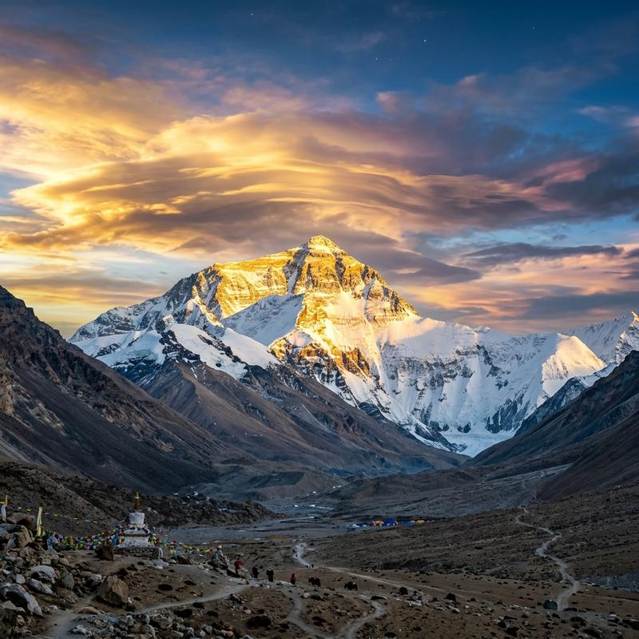
The Route at a Glance
Twenty chapters, seven countries, one ribbon of road and rail.
Every leg below was checked in October 2026 against current visas, borders, seasons and timetables. Where the plan had to change, the chapter says so.
The RouteColombo → Tbilisi · ~18,000 km
Altitude by day · Colombo to Tbilisi
Colombo · 31 DecMo's trek over the Thorong LaTbilisi · 27 Aug
The route in daysEach block is as wide as its stay
Chapter one · Sri Lanka · Days 1–10 · 31 December – 9 January
The Southern Coast
Colombo, Galle, Unawatuna, Mirissa · sea level
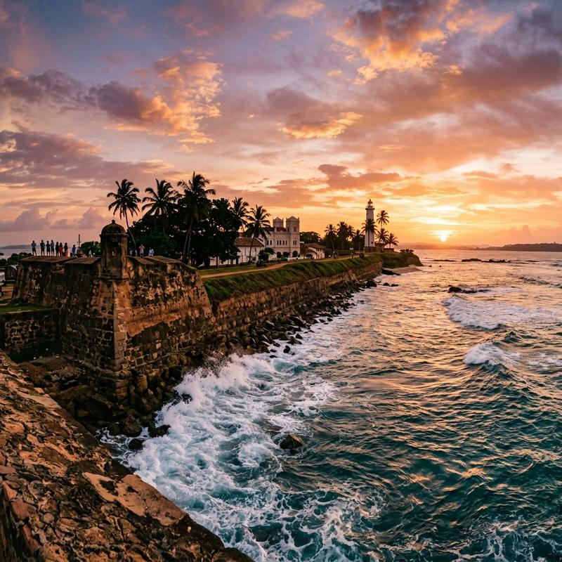
“Kneeling on the sand at twelve metres, hearing nothing but your own breath.”
Shake off the winter. Take the coastal train from Colombo to Galle, spend four days learning to dive in Unawatuna, and go out one morning from Mirissa to look for blue whales.
Practical
Transport
Sit on the right of the train for the sea.
PADI course
Do the dive theory online before you fly.
Visa
Sri Lanka's visa is currently free for Germans, but you still need the online ETA.
Chapter two · Sri Lanka · Days 11–19 · 10–18 January
The Hill Country
Ella, Adam's Peak, Kandy, Sigiriya · up to 2,243 m
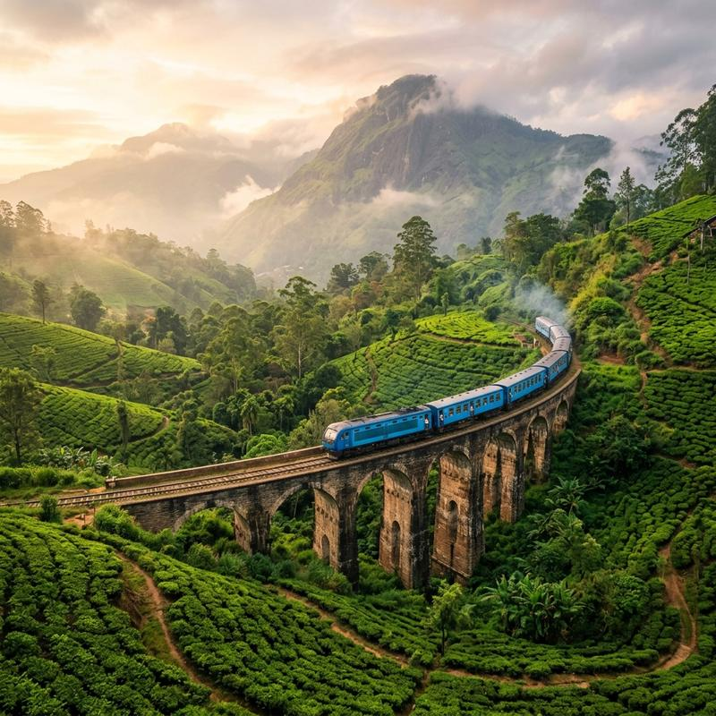
“An open train door on a bend, the mist lifting off a valley of tea.”
The slow blue train climbs into tea country and you need a sweater for the first time in weeks. Ella for walking, then a night on Adam's Peak: off the train at Hatton, a few hours' sleep in Dalhousie, and 5,200 lit steps with the pilgrims to watch the sunrise from Sri Pada, the summit with the sacred footprint. Then Kandy for the Temple of the Tooth and Sigiriya for the fortress on its rock.
Practical
Train tickets
Reserved seats sell out; book 30 days ahead or ride unreserved.
Adam's Peak
Climb the night of Tue 12 to Wed 13 January: in pilgrimage season (December to May), and clear of the weekend crowds of up to 20,000 people and of the Duruthu full moon around 22 January. Leave Dalhousie around 2:30 for sunrise near 6:30; 2.5–4 hours up.
Clothing
Bring a fleece and a warm layer for the summit; it is cold and windy at dawn.
Chapter three · South India · Days 20–26 · 19–25 January
The Spice Coast
Kochi, Munnar · up to 1,600 m
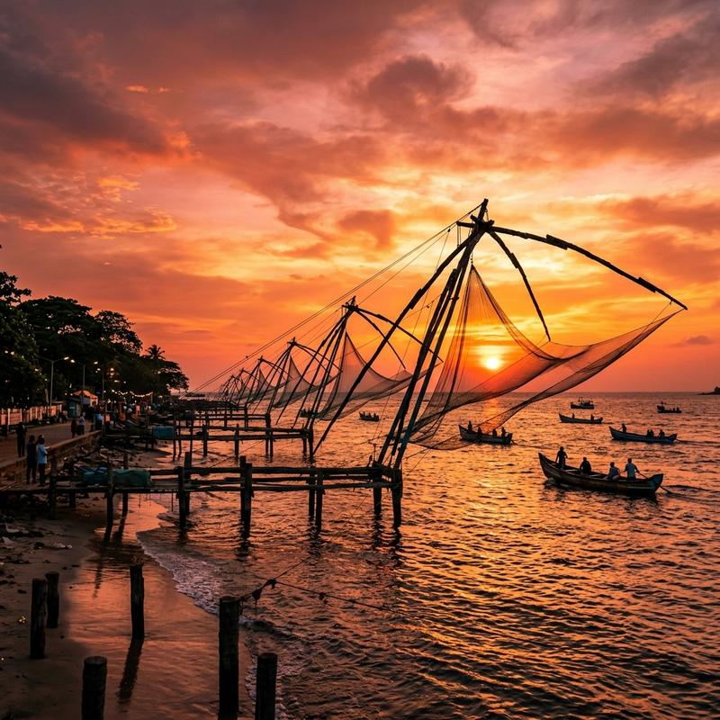
“The fishing nets dipping into the Arabian Sea as the sun goes.”
A short flight and India arrives all at once. Start gently in Fort Kochi, with its Portuguese churches, Dutch houses and Chinese fishing nets, then climb into the cardamom and tea hills of Munnar.
Practical
Getting to Munnar
Bus Kochi to Munnar takes about four hours of hairpins.
Season
Late January is peak season in Kerala; book rooms a few days ahead.
Chapter four · South India · Days 27–57 · 26 January – 25 February
The Ashram
Sivananda ashram, Neyyar Dam · 100 m
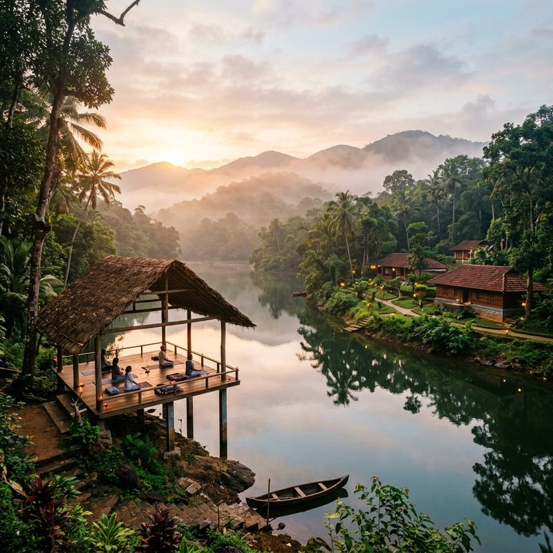
“Day twenty-eight. The bell goes and your body is already walking to the hall.”
A month at the Sivananda Yoga Vedanta Dhanwantari Ashram. Bell at 05:20, meditation and chanting, two asana classes a day, karma yoga, Vedanta lectures. No meat, no alcohol, no leaving the grounds.
Practical
Which programme
The year-round yoga vacation fits these dates (26 Jan–25 Feb), at roughly $20 a night each; check Neyyar's current rate. The teacher training runs 14 Feb–13 Mar for $1,466–2,635 each and would mean doing Goa and Hampi before the ashram.
Rooms
Ask whether a couple may share a room; other Sivananda ashrams don't allow it.
Dress code
White or yellow clothes, shoulders and knees covered.
Chapter five · South India · Days 58–64 · 26 February – 4 March
The Backwaters
Varkala, Alleppey · sea level
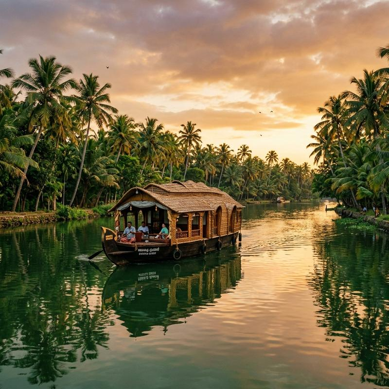
“Prawn curry on deck, engine off, moored under a palm on a moonless night.”
Out of the ashram gates and straight to Varkala's red cliffs over the Arabian Sea, then one night on a private houseboat in Alleppey with the canals sliding past. A slow way back into the world.
Practical
Houseboats
Book the houseboat in person in Alleppey so you can see the boat first.
Chapter six · Central India · Days 65–72 · 5–12 March
Hampi, the boulder kingdom
Hospet, Hampi · 470 m
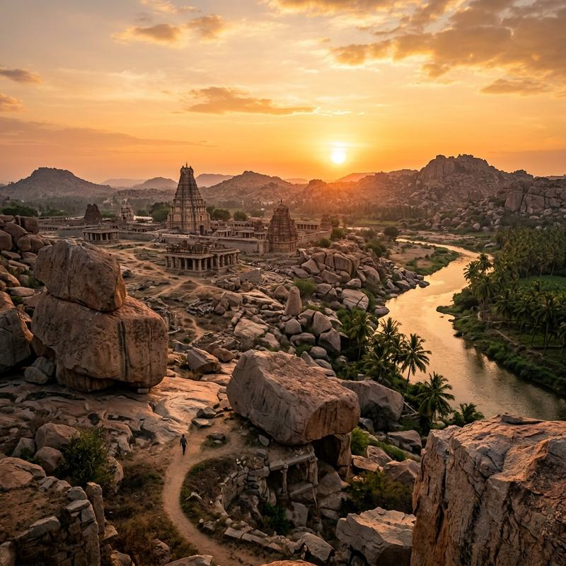
“Cycling at dawn between boulders the size of houses, alone with the ruins.”
An overnight train to Hospet and into a landscape of stacked granite and the ruins of the Vijayanagara capital. Rent bicycles, ride at dawn and dusk, hide at midday.
Chapter seven · Central India · Days 73–86 · 13–26 March
Goa, the slow shore
Palolem, Agonda · sea level
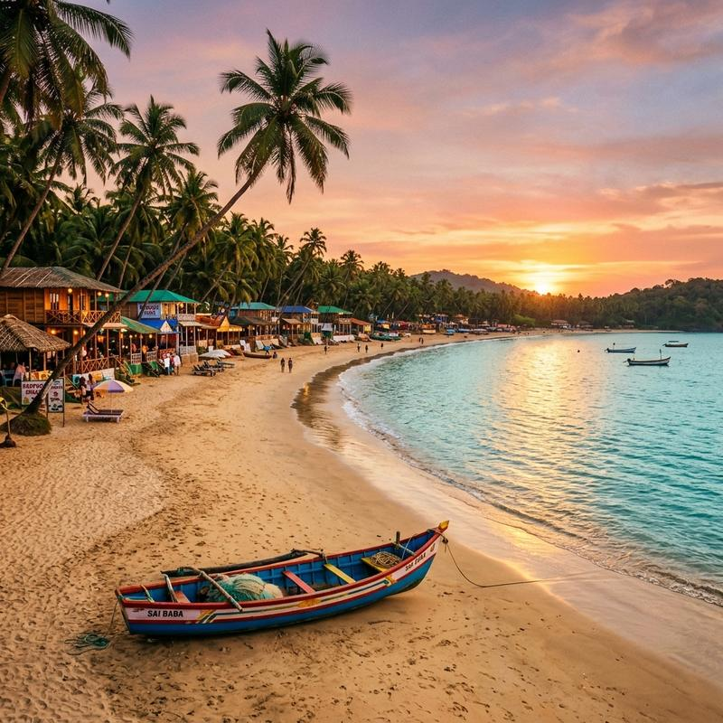
“Riding home to the hut at dusk, hot wind on your face.”
Two weeks of doing nothing on purpose before North India. Skip the party beaches of the north, find a hut in Palolem or Agonda by walking the sand, and rent a scooter.
Practical
Scooter hire
Scooters cost about €4 a day; carry an International Driving Permit.
Huts
Beach huts are rebuilt each season, so don't prebook.
Chapter eight · North India · Days 87–104 · 27 March – 13 April
The Holy Cities
Varanasi, Rishikesh, Amritsar · 80–370 m
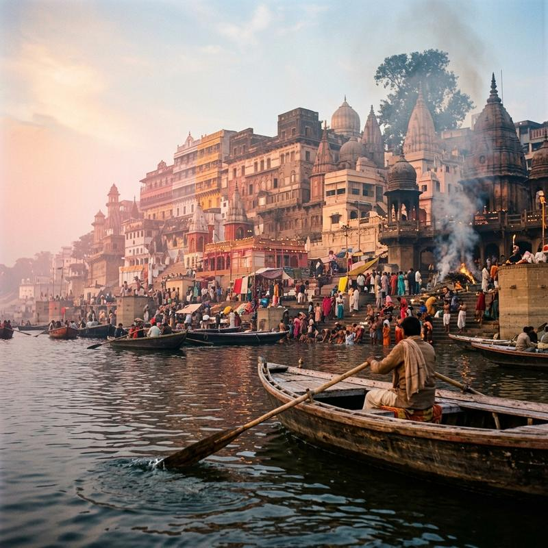
“Varanasi rising out of pink mist, seen from the middle of the river.”
India at full volume. The burning ghats of Varanasi, the cold green Ganges at Rishikesh, and the Golden Temple at Amritsar, whose free kitchen feeds tens of thousands every day.
Practical
Trains
Train bookings open 60 days ahead. The first 15 minutes are reserved for Aadhaar holders, so book after that or use the foreign tourist quota.
Respect
Never photograph cremations. Cover your head at the Golden Temple.
Chapter nine · Split paths · Days 105–125 · 14 April – 4 May
Diverging Paths
Tapovan for Micky, the Annapurna Circuit for Mo · up to 5,416 m
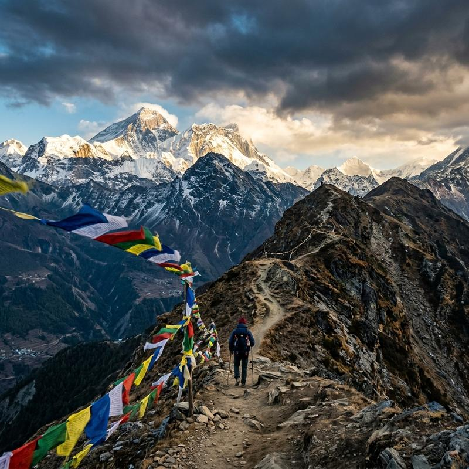
“A café in Kathmandu after three weeks apart. Two coffees, two summits.”
Three weeks apart. Micky stays in Tapovan above Rishikesh for a breathwork training. Mo flies to Kathmandu, takes the bus to Besisahar and a jeep to Chame, and walks the Annapurna Circuit over the Thorong La to Jomsom and Pokhara.
Practical
Guide & permits
A licensed guide has officially been required in the Annapurna area since 2023. Book one through an agency, which also sorts the permits.
Thorong La
Mid-April is peak season, so book early. The pass is still far below freezing before dawn, and new snow can close it for a day or two. Keep two buffer days.
“The stupa's eyes look north, the way you are about to go.”
Back together, and a calm week before China. Rooftop tea in Patan, the walk around Boudhanath at dusk, one night at Nagarkot for the whole Himalayan crest. Buy down jackets.
Chengdu, Lhasa, Gyantse, Shigatse, Everest · 3,656 m, up to 5,000 m
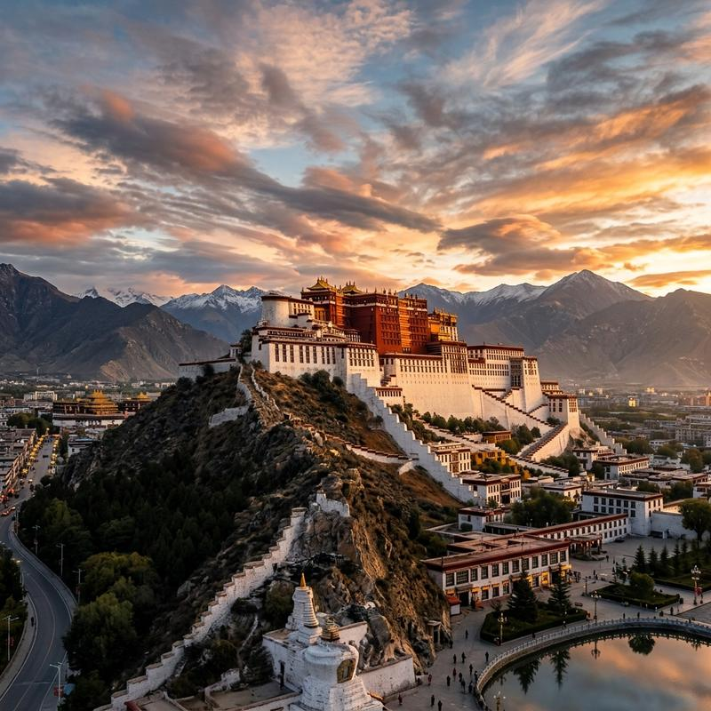
“Everest turning gold from the top down, hands inside your sleeves.”
The road from Kathmandu is closed, so you come in from the other side: fly to Chengdu and on to Lhasa. Four days acclimatising around the Jokhang and the Barkhor, then a six-day loop by car through Yamdrok, Gyantse and Shigatse to Rongbuk under Everest's north face, and back to Lhasa.
Practical
Tour & permit
A guide and a booked tour are required the whole time. The agency needs your passports at least 20 days ahead and delivers the permit to your Chengdu hotel.
Closures
Tibet usually closes to foreigners in February and March. By mid-May it should be open again, but confirm before paying.
Altitude
Pack Diamox; get it from your Hausarzt.
If plans change
Plan A, now the plan
Fly Kathmandu to Chengdu on your own L visa and join the Tibet tour there. You stay free to travel on to Xinjiang alone.
Plan B
If the Kyirong border reopens and China extends visa-free entry into 2027, take the original eight days overland from Kathmandu. Avoid the group visa sold in Kathmandu: it cancels your L visa and ties you to the group's exit.
Plan C
If Tibet is closed, go overland from Chengdu through western Sichuan (Kangding, Tagong, Litang) or visit Rebkong and Labrang near Xining, then rejoin the route at Xining.
“A herd of wild ass running beside the train for half a minute, then gone.”
Twenty-one hours on the highest railway in the world, with oxygen at every berth. Over the Tanggula Pass in the afternoon, across Hoh Xil at dusk, into Xining at dawn.
Practical
The right train
Z8982 leaves at 09:50 and arrives at 06:21 (October 2026 timetable; it may be seasonal, so recheck in April).
Tickets
Tickets go on sale 15 days ahead on Trip.com or 12306. Take soft sleeper: four berths and a door, about ¥780 each.
Chapter thirteen · China · Days 151–162 · 30 May – 10 June
The Hexi Corridor
Xining, Zhangye, Jiayuguan · 1,500–2,300 m
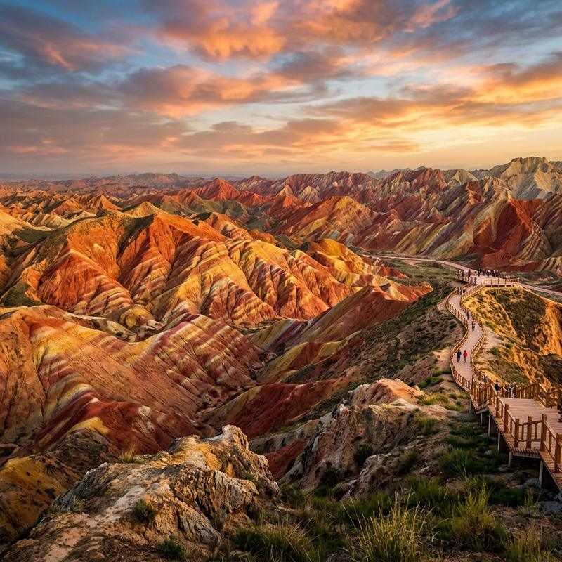
“Striped hills at sunset. The colours don't make sense; you stop trying.”
The Silk Road's narrow passage between the Tibetan plateau and the Gobi, now at 250 km/h. Kumbum monastery near Xining, the striped Danxia hills at Zhangye, the western end of the Ming wall at Jiayuguan.
Practical
Trains
High-speed rail throughout; Xining to Zhangye is about 2.5 hours.
Language
English is rare. Keep hotel addresses in Chinese and an offline translator.
Chapter fourteen · China · Days 163–167 · 11–15 June
Dunhuang, where the desert meets the Buddha
Mogao caves, Crescent Lake · 1,140 m
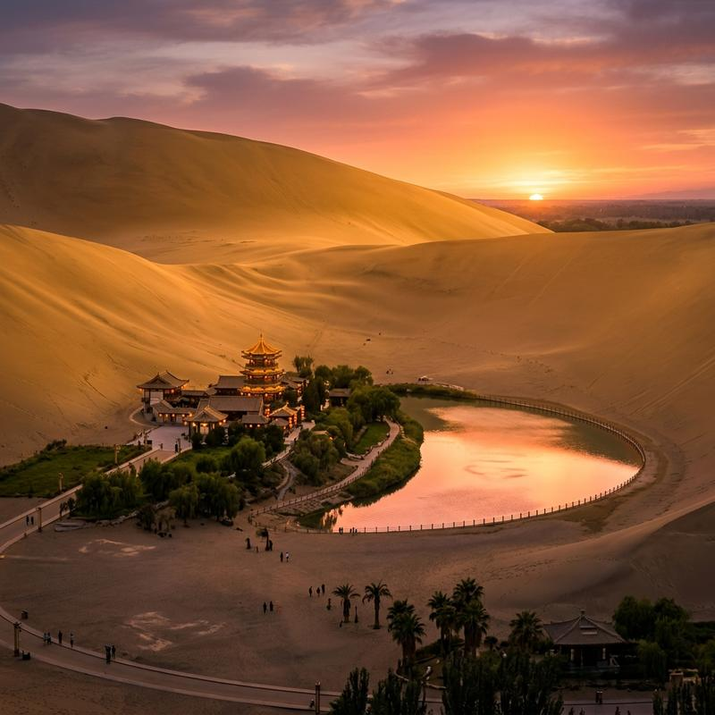
“Top of the dune, the lake in shadow below, the sand humming.”
An oasis at the edge of the Gobi. The Mogao caves hold a thousand years of Buddhist painting; outside town a crescent-shaped spring sits between hundred-metre dunes.
Practical
Mogao tickets
Book Mogao about 30 days ahead. The official site often needs a Chinese phone number, so use Trip.com or an agency.
Heat & sand
Mid-June days pass 30 °C. Climb the dunes at sunrise or after 18:00, with a buff for the sand.
Chapter fifteen · China · Days 168–176 · 16–24 June
Turpan, the oasis of fire
Turpan, Ürümqi · −154 m
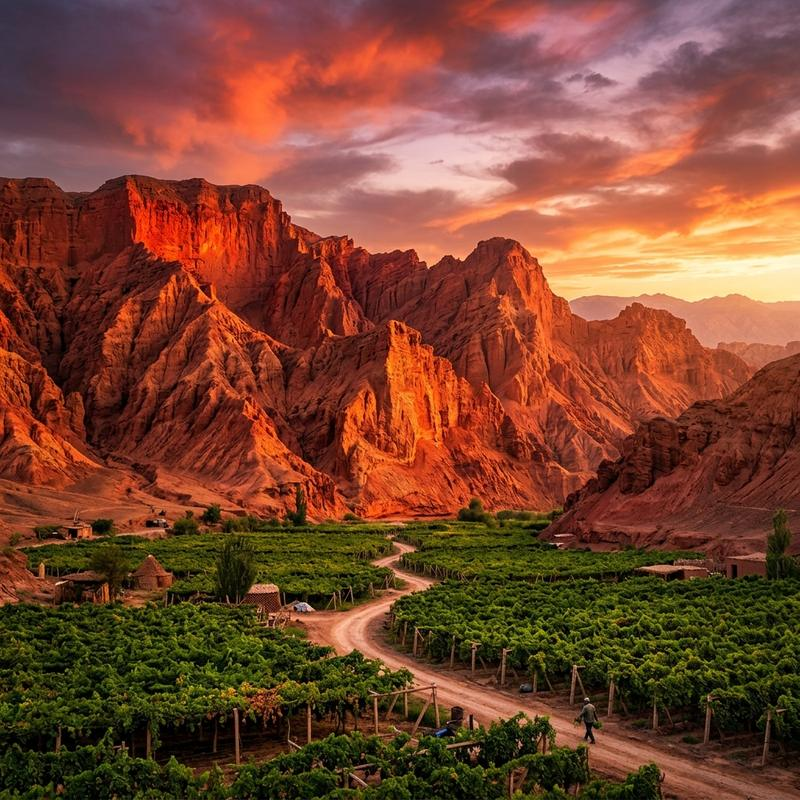
“Cold yoghurt under a vine trellis, nothing to do for an hour.”
Below sea level, ringed by the Flaming Mountains, and green with vines fed by hand-dug karez channels. This is where the trip turns Uyghur: lamb, nan, laghman, the call to prayer.
Practical
Heat
June highs average about 37 °C and often pass 40 °C. Go out early and late.
Xinjiang rules
Foreigners may only stay in licensed hotels. Carry your passport for frequent checkpoints, and don't fly drones.
Time zones
Xinjiang time runs two hours behind Beijing time. Check which one a ticket uses.
Chapter sixteen · China · Days 177–183 · 25 June – 1 July
Kashgar, the last city of China
Kashgar, Karakul Lake · 1,290 m, Karakul 3,600 m
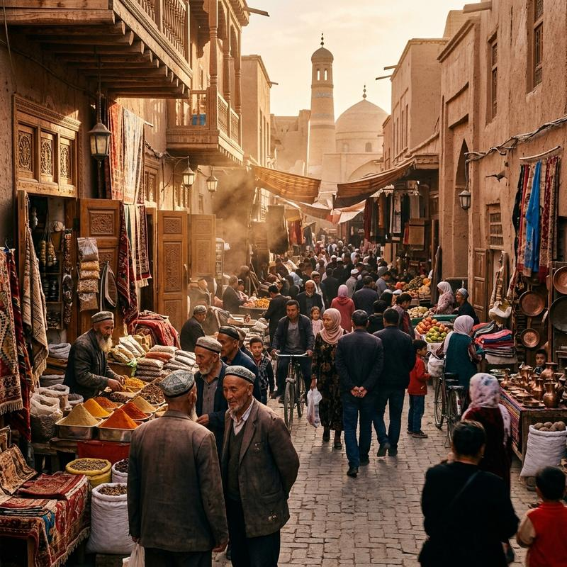
“Karakul like black glass, Muztagh Ata catching the sun first.”
The old crossroads of the southern Silk Road. Samsa from the tonur ovens of the Old Town, the Sunday livestock bazaar on 27 June, then a night at Karakul Lake under Muztagh Ata.
Practical
Border permit
The Karakoram Highway needs a border permit. It's free and takes about 30 minutes at the Kashgar airport desk; get it even if Karakul alone may not need it.
Karakul
A private driver to Karakul and back costs about €80.
Chapter seventeen · Border · Days 184–186 · 2–4 July
Across the Irkeshtam
Kashgar to Sary-Tash to Osh · Sary-Tash 3,170 m
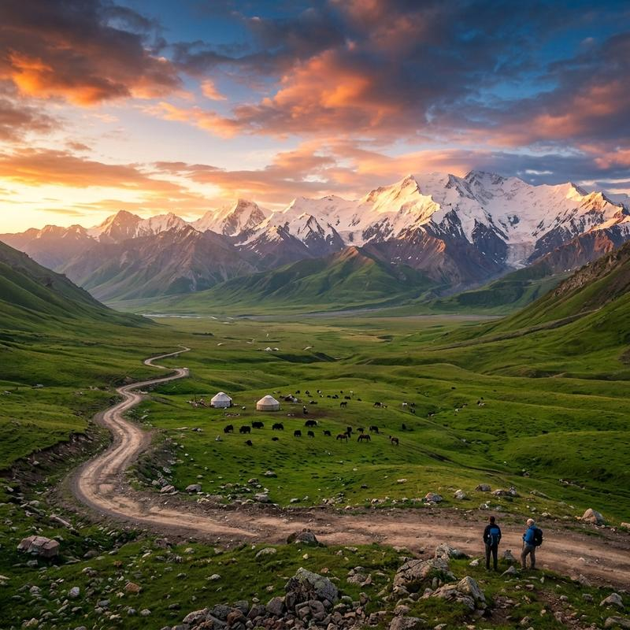
“Sary-Tash at sunrise, the Pamir wall pink, China behind you.”
The quiet back door out of China. The exit stamp at Ulugqat, a long no-man's-land, then the Alay valley opens with the Pamirs along one side. A cold night in Sary-Tash, then down to Osh.
Practical
Border hours
Open Monday to Friday only, closed roughly 13:00–16:00 and on Chinese holidays. You reach it on Friday 2 July, so cross that morning or a day early. Any delay means waiting until Monday.
Logistics
Arrange the Chinese side through an agency; shared taxis alone are unreliable for foreigners.
Chapter eighteen · Central Asia · Days 187–204 · 5–22 July
Kyrgyzstan
Bishkek, Karakol, Altyn Arashan, Song Kol · Song Kol 3,016 m
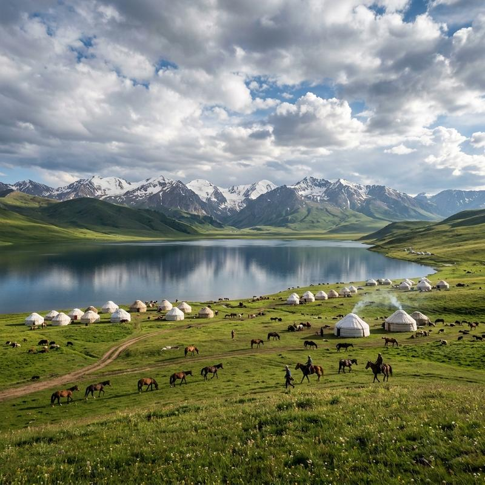
“Two in the morning outside the yurt, stars doubled in the lake.”
After weeks of checkpoints, open country. Bishkek, then east to Karakol and up to the Altyn Arashan hot springs, then Song Kol: a lake at 3,016 m, summer pastures, a few nights in a yurt.
Practical
Song Kol
July is high season at Song Kol; book the yurt camp and horses ahead through a community tourism office.
Chapter nineteen · Uzbekistan · Days 205–219 · 23 July – 6 August
The Silk Road Cities
Tashkent, Samarkand, Bukhara · 220–700 m
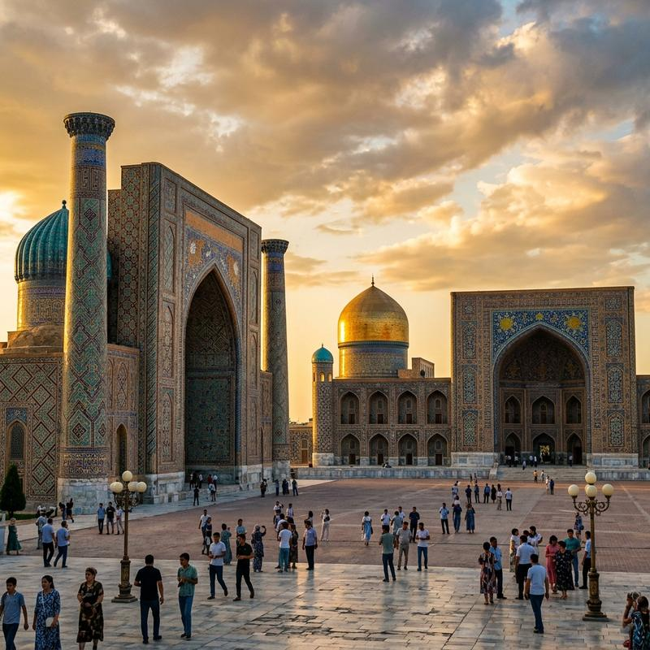
“Tea under the mulberries at Lyab-i-Hauz as the walls turn orange.”
The Silk Road's architecture at full scale. Fast Afrosiyob trains between Tashkent, Samarkand and Bukhara; tiled madrasas, covered bazaars, tea by the Lyab-i-Hauz pool.
Practical
Heat
Late July highs often pass 40 °C. Plan for mornings and evenings.
Trains
Book the Afrosiyob the day sales open on the railway.uz app; it sells out.
Chapter twenty · Georgia · Days 220–240 · 7–27 August
Georgia, wine and the Caucasus
Tbilisi, Kazbegi, Kakheti · 380–2,170 m
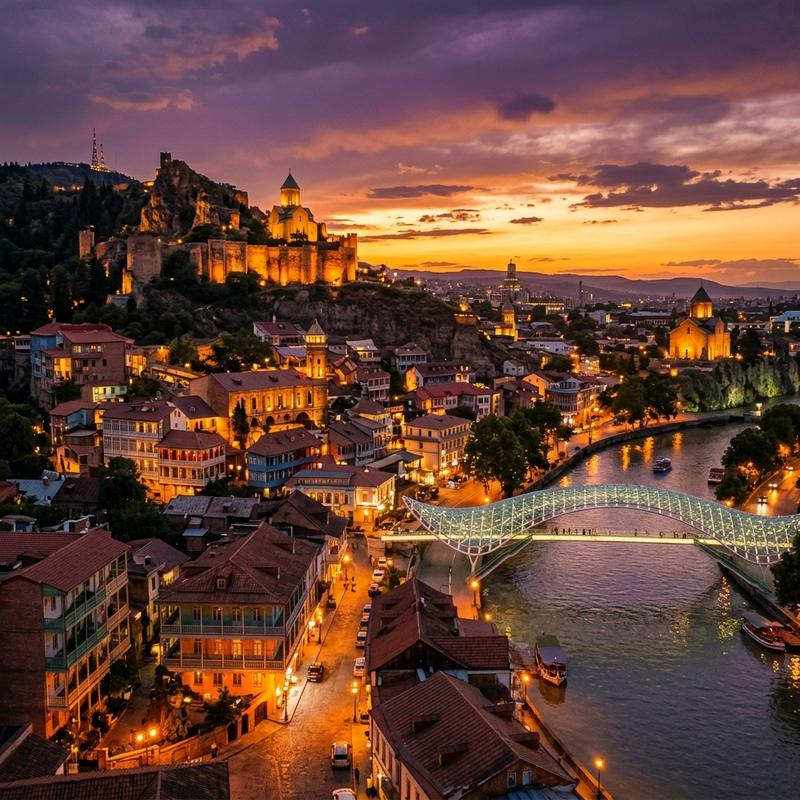
“Amber wine on the last night, tracing the line back to Colombo.”
Three weeks to land softly. Sulphur baths in Tbilisi, Gergeti Trinity church under Mount Kazbek, and a supra in Kakheti with amber wine from clay qvevri.
Practical
Getting there
Uzbekistan Airways flies Tashkent to Tbilisi direct. August is hot in Tbilisi; Kazbegi stays cool.
Entry
Visa-free for a year, but since January 2026 travel health insurance is mandatory: at least GEL 30,000 for the whole stay. Carry proof.
Transport
Bolt for rides in Tbilisi, GoTrip for drivers between towns.
What changed after the October 2026 check, what the trip really costs, and what to arrange before you leave. Day 1 is 31 December, the flight to Colombo.
Checked in October 2026
Nepal to Tibet by road. Both crossings listed as closed indefinitely (25 Sep 2026). Fly Kathmandu to Chengdu and enter Tibet from China (Plan A).
China visa. Visa-free entry ends 31 Dec 2026 and allows 30 days. You'll be in China about 52 days from mid-May. Apply in Germany for a multiple-entry L visa, 60 days per stay, valid at least until July. A single-entry visa expires three months after issue, before you reach China.
India's 90-day rule. Micky would stay about 105 days in a row. One exit before 18 April on a multiple-entry e-visa.
Ashram programme. The January teacher training clashes with a 31 December start. Take the year-round yoga vacation as planned, or the 14 Feb course with Goa and Hampi moved first.
Annapurna guide rule. Licensed guide officially required since 2023. Book guide and permits through an agency.
Summer heat. Turpan in late June and Bukhara in late July often pass 40 °C. Sightsee early and late; rest at midday.
Irkeshtam pass. Weekdays only, long lunch closure. You arrive on Friday 2 July. Cross that morning or on Thursday.
Sri Lankan trains. Cyclone repairs still underway in places. Recheck in December.
Georgia entry. Insurance is mandatory since January 2026. Carry proof of cover, GEL 30,000 minimum.
Fine as planned. The sky train runs, and Kyrgyzstan, Uzbekistan and Georgia are visa-free for 60, 30 and 365 days.
Insurance, eight monthsHealth abroad plus rescue cover to 5,500 m.
€900–€1,600
Vaccinations, gear, eSIM and VPNRabies is the big vaccine cost; down jackets for Tibet.
€900–€2,800
Total, 240 days
€31,000–€51,600
Plan on about €40,000, roughly €170 a day for two.
The old estimate of €21,700–32,150 priced China and Central Asia at backpacker rates, used a group price for Tibet, and left out flights, visas and insurance.
Before You Go
Now: Decide on the ashram programme: the year-round yoga vacation from 26 January, or the teacher training from 14 February. Ask whether you can share a room.
November–December: China multiple-entry L visa, 60 days per stay, valid until at least July. One-year multiple-entry India e-visas. Sri Lanka ETA. Insurance with rescue cover to 5,500 m and a certificate for Georgia. Start rabies shots.
January: Book the Tibet tour, Mo's Annapurna guide and Micky's breathwork training. From 26 January, Indian trains for late March open.
April: Micky leaves India once before 18 April. Confirm Tibet permits and that the Z8982 is running.
May–June: Mogao about 30 days ahead, sky train tickets on 13 May, Afrosiyob tickets from late May, and an agency for the Chinese side of Irkeshtam on 2 July.
Money & Connectivity
South Asia: Cash rules. Carry some USD or EUR as backup.
China: Set up Alipay or WeChat Pay with a foreign card before arriving. Install a VPN before you cross, too.
Central Asia & Georgia: Cards in Tashkent and Tbilisi; som and lari for bazaars and marshrutkas.
Cards: Bring three from different banks. One will get swallowed or blocked.
Signal: Regional eSIMs skip the Indian SIM paperwork. Expect none around Everest, on the Annapurna and in the Pamirs.
Health & Packing
Vaccinations: Hepatitis A and B, typhoid, tetanus, and rabies for the dogs and remote stretches.
Water: Unsafe from the tap until Tbilisi. Carry a filter bottle.
Altitude: Diamox from your Hausarzt. At altitude, one beer counts as three.
Climate spectrum: From 38°C in Bukhara to well below freezing at Rongbuk. Down jacket, thermals and linen.
Modesty: Whites for the ashram; shoulders and knees covered for temples and mosques.
What to Read
India:Shantaram (Gregory David Roberts).
Himalaya:The Snow Leopard (Peter Matthiessen).
Tibet:Seven Years in Tibet (Heinrich Harrer).
Central Asia:The Lost Heart of Asia (Colin Thubron) & Sovietistan (Erika Fatland).
“From a red-eye landing in Colombo to a glass of amber wine in Tbilisi — eighteen thousand kilometres, seven countries, every kind of weather. Two hundred and forty days of being in motion.”